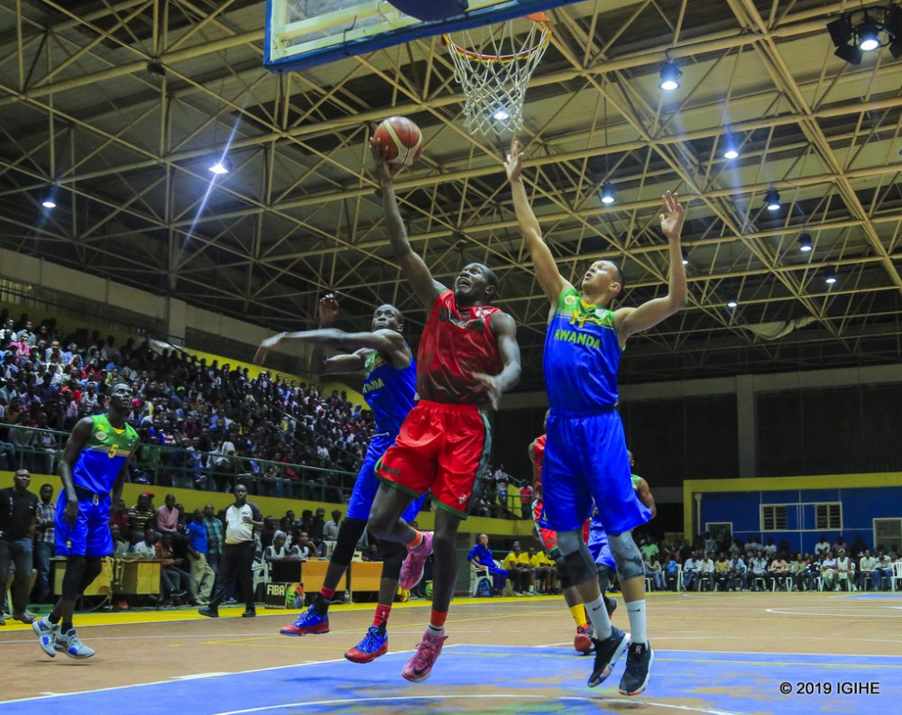

Ikipe y’u Rwanda ya Basketball izatangirira kuri Mali mu mikino yo mu itsinda D yo gushaka itike y’Igikombe cya Afurika cy’abagabo (Afrobasket 2021) kizabera i Kigali mu mwaka utaha.
Mu ntangiriro z’uku kwezi nibwo Umujyi wa Kigali wemejwe nk’umwe muri ibiri izakira imikino
y’amatsinda yo gushaka itike ya Afrobasket 2021, izaba mu Ugushyingo.
Ikipe y’u Rwanda ya Basketball izatangirira kuri Mali mu mikino yo mu itsinda D yo gushaka itike y’Igikombe cya Afurika cy’abagabo (Afrobasket 2021) kizabera i Kigali mu mwaka utaha.
Mu ntangiriro z’uku kwezi nibwo Umujyi wa Kigali wemejwe nk’umwe muri ibiri izakira imikino
y’amatsinda yo gushaka itike ya Afrobasket 2021, izaba mu Ugushyingo.
Kigali izakira amakipe 12 yo mu matsinda atatu
A, B na D mu gihe andi makipe ane yo mu itsinda E azahurira mu Mujyi wa Alexandria mu Misiri. Imikino yo mu itsinda C yo yakinwe muri Gashyantare uyu mwaka.
Muri iyi mikino izabera muri Kigali Arena, mu itsinda D, u Rwanda ruzatangira rukina na Mali ku wa 26 Ugushyingo mu mukino uzaba saa mbiri z’umugoroba (20:00) mu gihe Nigeria izaba yakinnye na Algérie saa tanu z’amanywa (11:00).
Ikipe y’Igihugu izasubira mu kibuga tariki ya 28 Ugushyingo ikina na Nigeria guhera saa mbiri, mu gihe Algérie izaba yakinnye na Mali guhera saa kumi n’imwe z’umugoroba.
Umukino wa nyuma w’u Rwanda mu itsinda D uteganyijwe ku wa 29 Ugushyingo, aho uzaruhuza na Algérie guhera saa mbiri, mu gihe Nigeria izaba yakinnye na Mali saa kumi n’imwe
. Andi makipe azitabira iyi mikino i Kigali ni Tunisie, Centrafrique, Repubulika Iharanira Demokarasi ya Congo na Madagascar zo mu itsinda A, Sénégal, Angola, Mozambique na Kenya zo mu itsinda B.
Afrobasket 2021 izitabirwa n’amakipe 16, izabera mu Rwanda hagati ya tariki ya 24 Kanama n’iya 5 Nzeri 2021 